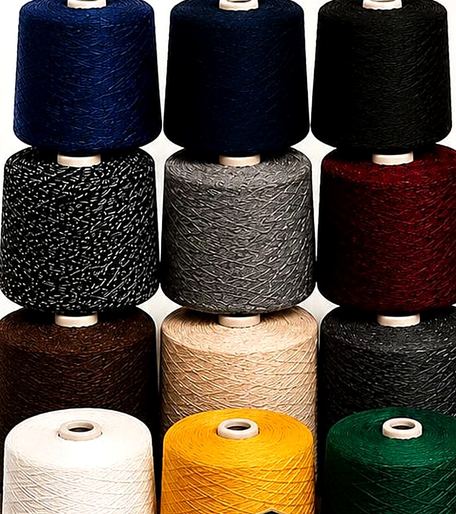
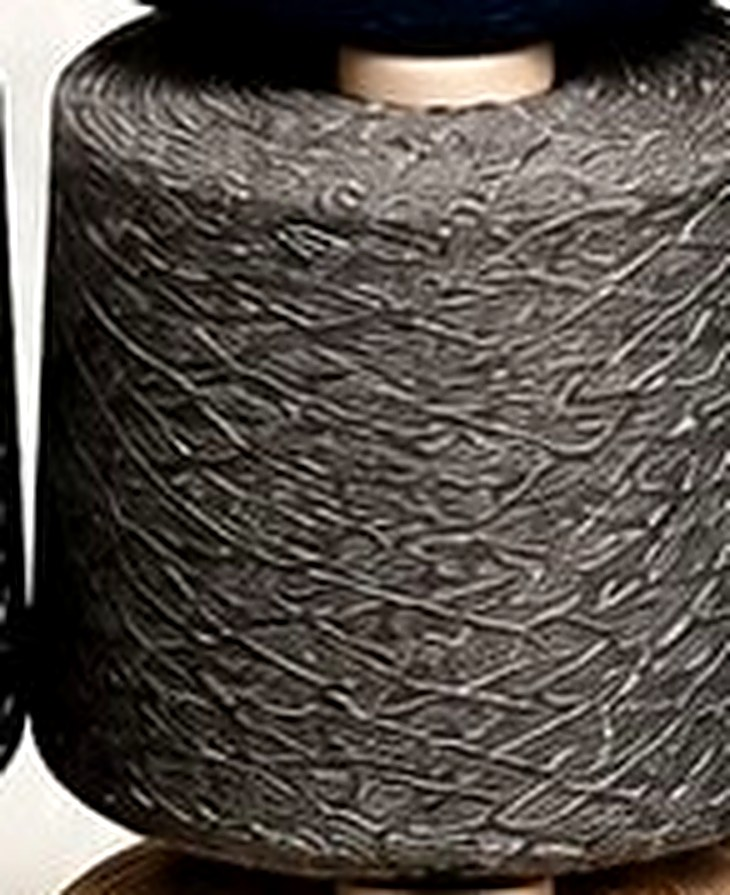
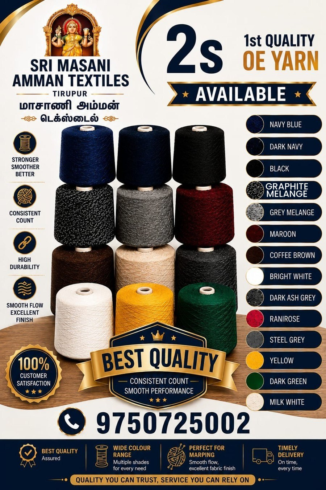

Our ProductsSri Masani Amman Textiles (மாசாணி அம்மன் டெக்ஸ்டைல்) is based in Tirupur, the heart of India's knitwear and hosiery industry. We manufacture and supply 1st quality 2s OE yarn and threads to knitters, garment units, mop manufacturers and textile traders across the region.
Customers come to us for one reason: ordinary yarn was letting them down. It shed, it broke mid-run, it lost its colour after a few washes. So we hold a tighter standard — stronger twist, uniform count, verified shade — and we check it on every batch rather than every so often.
Our name carries the blessing of Sri Masani Amman, and we run the business the way we honour that name — with honesty, consistency and care for every customer who trusts us with their production, whether that is a single sample cone or a standing monthly order.
Four commitments we hold to on every order, from a single sample cone to a full bulk dispatch.
Yarn built to hold up through winding, knitting and marping without snapping, shedding or breaking flow.
Every cone verified, so your machines run predictably batch after batch with no re-setting between lots.
Yarn that resists wear and holds its colour — wash after wash, fold after fold, batch after batch.
Fewer breaks on the line, cleaner fabric surface, and a finish your own customers notice immediately.
More than a tagline on a poster — it is the standard we hold ourselves to every single day, on every single order.
Transparent pricing and straight communication. 1st quality means 1st quality — we do not sell seconds as firsts.
We listen to what your production actually needs and match it — shade, count, cone size and quantity.
We plan dispatch around your deadlines, not the other way around. Your line should never wait on raw material.
1st quality stock from our own floor — never general-purpose yarn resold under a new label.

Best Quality Assured